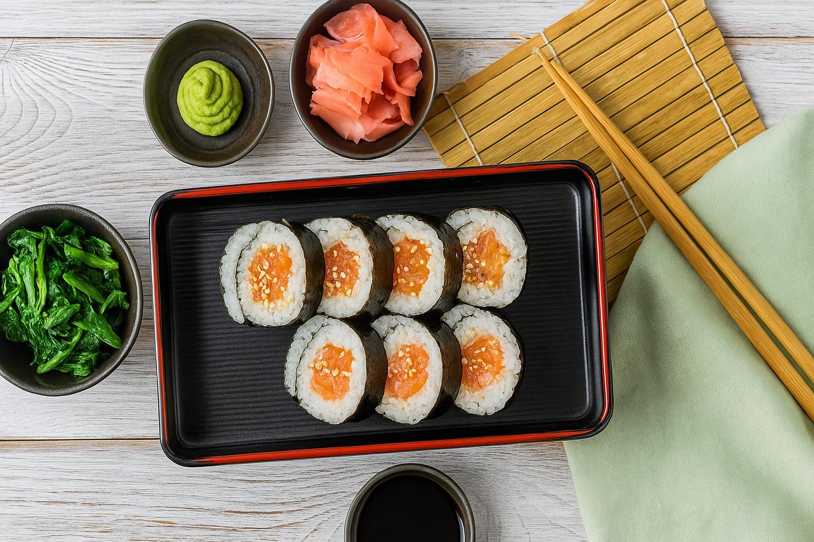

🇫🇷 法國 FR
優雅的法式用餐藝術，學習如何正確使用刀叉與盤中擺放禮儀，體現精緻生活美學。

🇯🇵 日本 JP
細緻的和式餐桌禮儀，從筷子使用到碗盤擺放，展現對食物與他人的尊重。
🇰🇷 韓國 KR
熱情的韓式餐桌文化，從長幼有序到共食禮儀，體現濃厚人情味。
🇺🇸 美國 US
輕鬆隨興的美式用餐習慣，學習如何在團體聚餐中享受大份量美食與自由點餐文化，體驗烤肉派對、速食與家庭式聚會的多元風貌。
🇮🇳 印度 IN
印度餐桌文化講究右手進食與分享，學習如何以手抓飯、蘸醬搭配咖哩、與家人共用 Thali 餐盤，體現印度重視情感與宗教潔淨的飲食哲學。
🇹🇼 台灣 TW
台灣擁有多樣的街頭小吃與團體共食文化，從吃飯配湯、使用筷子與共用菜盤，到夜市自由點餐，反映出台灣人的熱情與彈性飲食美學。